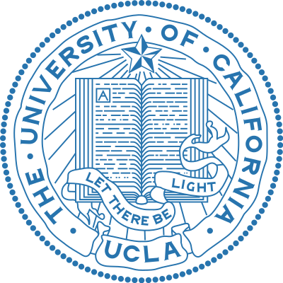
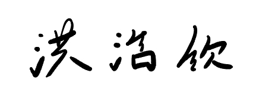
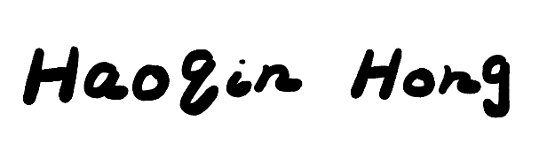
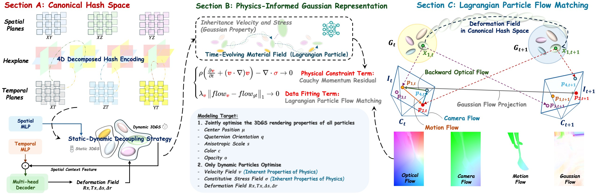
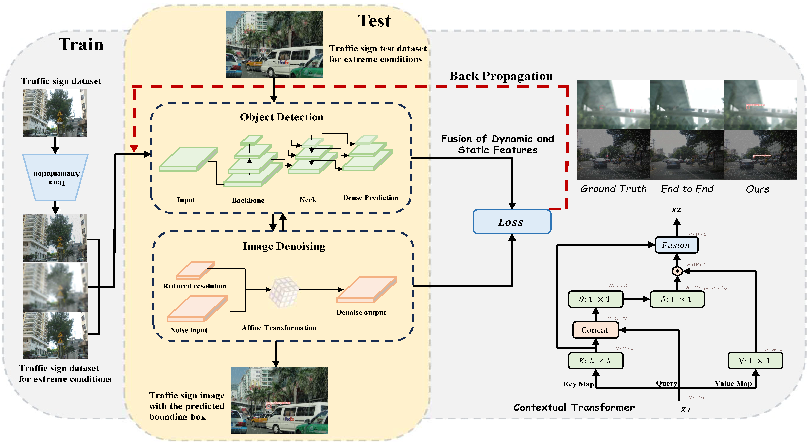
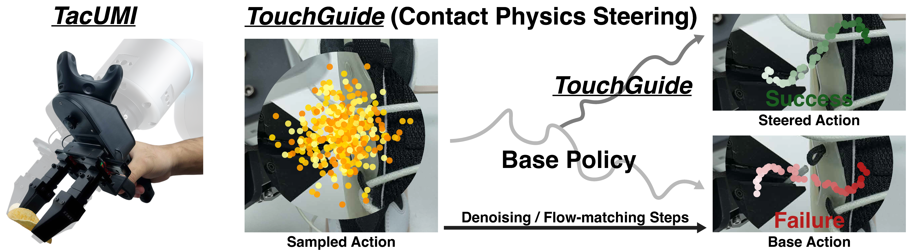
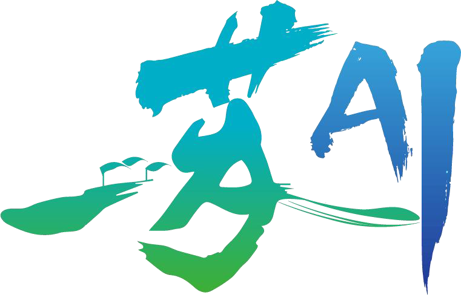
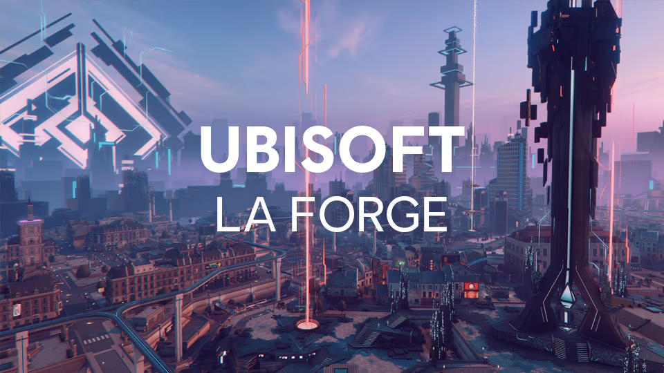
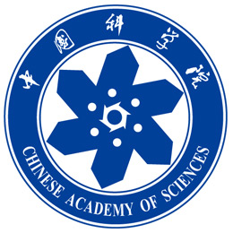

-
 University of Science and Technology of China (USTC)
University of Science and Technology of China (USTC)
School of AI & DS | 2025.9 - 2028.7
M.Phil in Intelligence Science and Technology - Artificial Intelligence
中国科学技术大学人工智能与数据科学学院智能科学与技术学术型硕士 -
Southwest University (SWU)
Yuan Longping Class, Hanhong Honors College | 2021.9 - 2025.7
B.Eng in Computer Science and Technology
西南大学含弘荣誉学院袁隆平班计算机科学与技术工学学士 -

University of California, Los Angeles (UCLA)
Visiting Student in Data Science | 2022.9 - 2023.1
加州大学洛杉矶分校数据科学项目访问学生
Welcome to my homepage! 🥰


I am a first-year academic master student in Artificial Intelligence at the School of AI & DS, University of Science and Technology of China, supervised by NSFC Distinguished Young Scholars Prof. Jingrun Chen, and I will also collaborate with Associate Researcher Congcong Zhu. I earned a B.Eng in Computer Science (Top Talent Program) in 2025 at Southwest University, under the guidance of Prof. Xiaofang Hu.
I did research internships at companies or institutes such as UBISOFT La Forge and iFlyTek Spark-LLM Foundation Model Team. I am also active in AI & Robotics competitions, currently a Kaggle Expert, and previously served as the algorithm leader and project manager of the SWU RoboMaster Team. I have published 2 first-author papers at conferences or journals such as AAAI 2026 and IJCNN & WCCI 2024, and have also published 2 co-author papers, such as in Neurocomputing 2025. I am currently seeking for research collaborations, feel free to exchange our ideas.
My research interests focus on Physically Interactive World Models:
- Video Generation & 4D Representation Reconstruction
- Feed-Forward & Generative 3D Vision
- Multimodal Learning & Robotics Perception
Github Haoqin Hong's Github
Email HaoqinHong@outlook.com haoqinhong@mail.ustc.edu.cn
Google Scholar Haoqin Hong's Google Scholar
Address Tianchen Road, High-tech West District, Chengdu, Sichuan Province, China, 611731
News
- 2026.2 🎉 I will start a student researcher Internship at UBISOFT La Forge.
- 2026.1 🎉 I have been admitted to the Tencent Games Engine Technology Research Program.
- 2025.11 🎉 My first-author paper was accepted by AAAI-26 (CCF-A).
- 2025.9 🎉 I will start a research Internship at iFlyTek Spark-LLM Foundation Model Team.
- 2025.9 🎉 My co-auther paper was accepted by Neurocomputing (CCF-C).
- 2025.9 🎉 I will start my M.Phil in Intelligent Science and Technology at USTC.
- 2024.3 🎉 My first-author paper was accepted by IEEE IJCNN 2024 Oral (CCF-C).
- 2023.6 🎉 I have been admitted to the China Academy of Sciences Innovation Training Program.
Publications & Awards
Publications
(* Equal contribution, † Corresponding author, ‡ Project leader)A total of 4 papers have been published, including 2 as the first author.
Research Interests: Video Generation & 4D Representation Reconstruction

AAAI-26 Poster
Physics-Informed Deformable Gaussian Splatting: Towards Unified Constitutive Laws for Time-Evolving Material Field.

Research Interests: Multimodal Learning & Robotics Perception

IEEE WCCI 2024 - IJCNN Track Oral Presentation
CCSPNet-Joint: Efficient Joint Training Method for Traffic Sign Detection Under Extreme Conditions.


Under Review
TouchGuide: Inference-Time Steering of Visuomotor Policies via Touch Guidance.
Other Paper
Attaining Hardware-Efficient Inference in Memristor-Based Transformer Accelerator via Network Redesign. Neurocomputing 2025
Selected Awards
Honors and Awards
- Outstanding Individual in Innovation Capability in Chongqing.
- Outstanding Graduates in Southwest University.
- Outstanding Undergraduate Thesis of Southwest University.
- Southwest University Hanhong Foundation Scholarship. (Top 40 among graduates of all degree levels)
- Southwest University First Class Scholarship.
Competition Awards
- 🥉 Bronze Medal in Kaggle Research Competition: NeurIPS - Open Polymer Prediction 2025.
- 🥉 Bronze Medal in Kaggle Research Competition: CVPR 2025 Workshop - Image Matching Challenge.
- 🥉 Bronze Medal in Kaggle Research Competition: Google - Fast or Slow? Predict AI Model Runtime.
- 🏅 National First Prize in the DJI RoboMaster University League.
- 🏅 National First Prize in the China Robotics and Artificial Intelligence Competition.
- 🥈 National Second Prize in the China/Contemporary Undergraduate Mathematical Contest in Modeling.
- 🥉 National Third Prize in the "Challenge Cup" Specialized Competition - Huawei Track.
- 🏅 Provincial First Prize in the National Undergraduate Electronics Design Contest.
Education Experience
Research and Internship Experience
Research Experience
-
Department of Computer Science, CityUHK
Co-Advised Graduate Research Student | Advisor: Prof. Rynson W. H. Lau | 2026.3 - Present
香港城市大学计算机科学学院联合培养研究生 -

Suzhou Key Laboratory of Artificial Intelligence, USTC
Graduate Research Student | Advisor: Prof. Jingrun Chen | 2024.9 - Present
苏州人工智能重点实验室研究生 -
Chongqing Key Laboratory of Brain-inspired Computing, College of AI, SWU
Undergraduate Research Student | Advisor: Prof. Xiaofang Hu | 2022.3 - 2025.6
西南大学人工智能学院类脑启发计算重庆市重点实验室本科生
Internship Experience
-

UBISOFT La Forge | UBISOFT China AI & Data Lab
Student Researcher Intern in World Building & Rendering | 2026.2 - Present
(a) 3D Asset Texturing, (b) Feed-Forward PBR Material Estimation
育碧研发部门 La Forge 团队世界重建和渲染方向学生研究员 -
Spark-LLM Foundation Model Team | iFlyTek AI Research Institute
Research Algorithm Engineer Intern in Multimodal-LLMs Post-Training | 2025.9 - 2026.1
(a) VLM Post-Training with SFT & RFT, (b) Agentic-RL and (c) Reward Model
Spark-LLM 基座模型团队多模态大模型后训练方向助理算法研究工程师
Presentative Project Experience
-
 Tencent Interactive Entertainment Group (IEG)
Tencent Interactive Entertainment Group (IEG)
Tencent Games Engine Technology Research Program | 2026.1 - Present
Applications of World Models based on 3DGS in Game UGC Development
腾讯互动娱乐部门游戏引擎技术课题实践项目 -

National Astronomical Observatory, Chinese Academy of Sciences
Leader of Innovation Training Program | 2023.3 - 2024.7
Generative Astronomical Multimodal Model for IR-Optical Cross-Retrieval
中国科学院大学生创新实践训练项目（"科创计划"）负责人
Additional Information
Open-Source Projects
- Awesome-Physically-Interactive-World-Models

- RoboMaster-SLAM: Point-LIO & MID-360 Sentinel Navigation Solution

Research Collaborator
- Zhi-Li Zhou | Ph.D in Physics & Mathmatics at UIUC | Theoretical Physics
- Yuzhuo Chen | M.Eng in CS at USTC | Video Generation